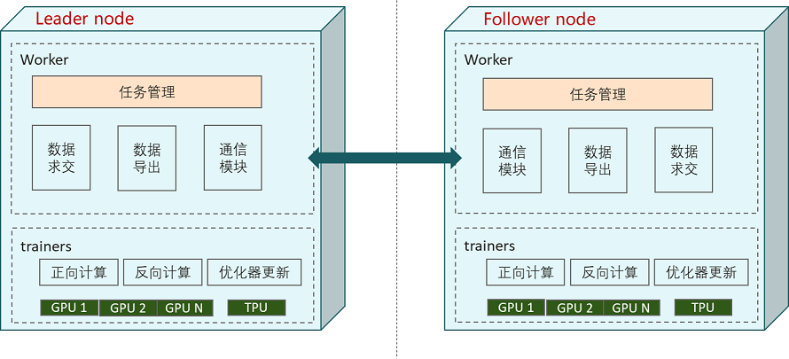

纵向联邦部署

本文档讲解如何使用和部署纵向联邦学习框架。
MindSpore Vertical Federated Learning (VFL) 物理架构如图所示：

如上图所示，在纵向联邦的交互中有两个参与方：Leader node和Follower node，每一个参与方都有两种角色的进程：FLDataWorker和VFLTrainer：
FLDataWorker
FLDataWorker的功能主要包括：数据集合求交：获得纵向联邦参与双方的共有用户交集，支持隐私集合求交协议，可防止联邦学习参与方获得交集外的ID信息。
训练数据生成：在获得交集ID之后，扩充数据特征，生成用于训练的mindrecord文件。
开放管理面：向用户提供
RESTful接口，实现对集群的管理。
在一个联邦学习任务中，只有一个
Scheduler，其与Server通过TCP协议通信。VFLTrainer
VFLTrainer为执行纵向联邦训练任务的主体，执行模型拆分后的正反向计算、Embedding张量传输，梯度张量传输、反向优化器更新等任务。当前版本支持单机单卡和单机多卡的训练模式。在MindSpore联邦学习框架中，
Server还支持弹性伸缩以及容灾，能够在训练任务不中断的情况下，动态调配硬件资源。
FLDataWorker和VFLTrainer一般部署在同一台服务器或者容器中。
准备环节
建议使用Anaconda创建虚拟环境进行如下操作。
安装MindSpore
MindSpore纵向联邦支持在x86 CPU、GPU CUDA和Ascend硬件平台上部署。可参考MindSpore安装指南安装MindSpore最新版本。
安装MindSpore Federated
通过源码编译安装。
git clone https://gitee.com/mindspore/federated.git -b master
cd federated
bash build.sh
对于bash build.sh，可通过例如-jn选项，例如-j16，加速编译；可通过-S on选项，从gitee而不是github下载第三方依赖。
编译完成后，在build/package/目录下找到Federated的whl安装包进行安装：
pip install mindspore_federated-{version}-{python_version}-linux_{arch}.whl
验证是否成功安装
执行以下命令，验证安装结果。导入Python模块不报错即安装成功：
from mindspore_federated import FLServerJob
运行样例
FLDataWorker的运行样例可参考纵向联邦学习数据接入。
VFLTrainer的运行样例可参考纵向联邦学习模型训练 - Wide&Deep推荐应用。